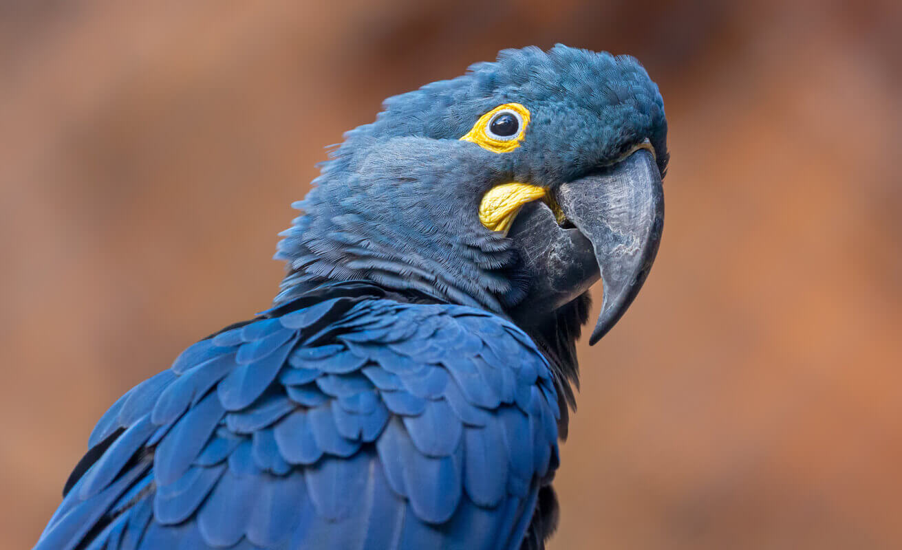
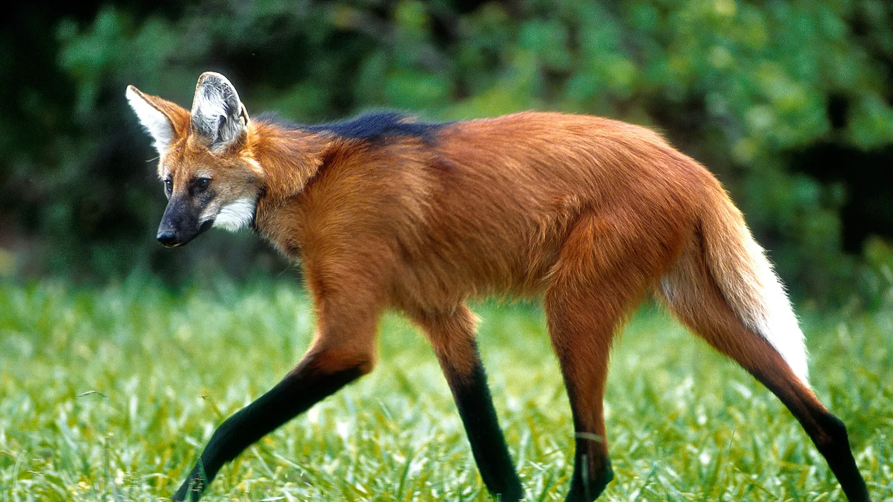
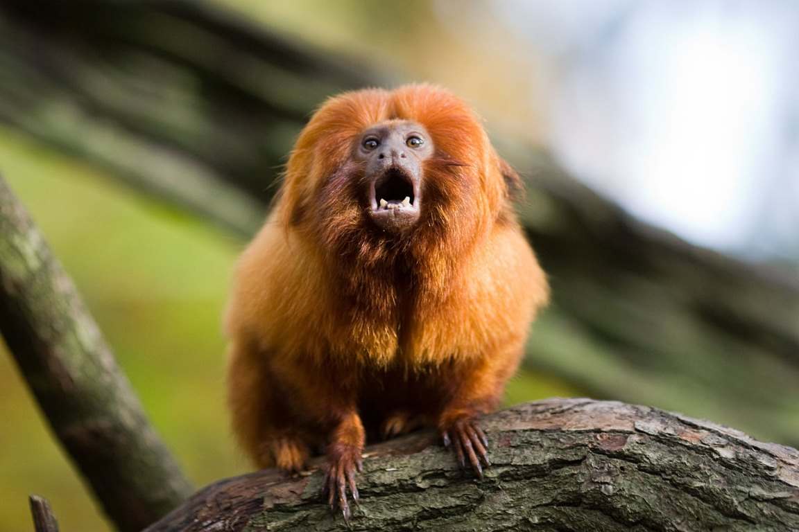
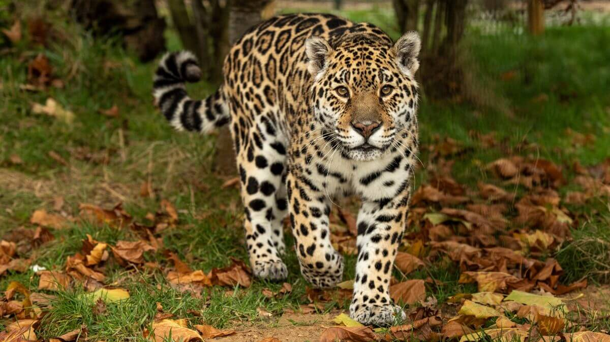
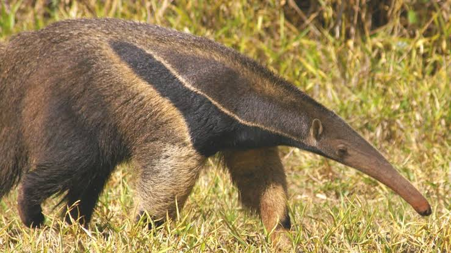
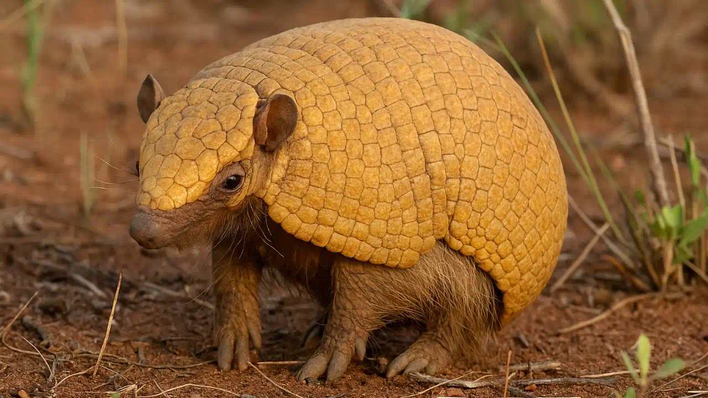

Toda vida silvestre merece proteção
Ajude a preservar nossos ecossistemas!
Venha transformar
realidades!
Sobre o projeto Curupira
Projeto voltado para conectar a comunidade com a preservação da fauna e dos ecossistemas terrestres, alinhado ao ODS 15.
Saiba mais →O que fazer ao encontrar um animal
- Mantenha distância segura e observe sem interferir.
- Não tente capturar, tocar ou alimentar o animal.
- Fotografe para identificação e registre a localização.
- Acione os órgãos ambientais responsáveis.
Alerta: Nunca tente resgatar animais silvestres por conta própria.
Nossa Fauna






Denúncia e Contato
Encontrou uma situação de risco? Acione os órgãos competentes.
- IBAMA
- Ministério do Meio Ambiente
- Linha Verde: 0800 061 8080